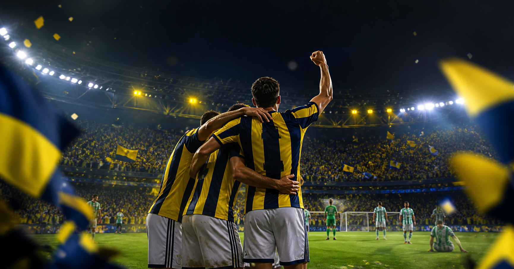

Köşe Yazısı
Galatasaray
Bir Transferden Fazlasını Bekliyoruz
Galatasaray taraftarı bazen yalnızca bir futbolcuyu değil, yeniden heyecanlanacağı o anı ve Avrupa hayalini büyütecek bir duyguyu bekler.
Maç yorumu, transfer değerlendirmesi ve lig analizi. Bu bölümdeki yazılar yazarların kişisel görüşüdür ve sitenin doğrulanmış maç verisinden ayrıdır.
Yalnızca yayına alınmış yazılar listelenir; taslaklar burada görünmez.
Galatasaray taraftarı bazen yalnızca bir futbolcuyu değil, yeniden heyecanlanacağı o anı ve Avrupa hayalini büyütecek bir duyguyu bekler.

Bazen bir galibiyet sadece tabelaya yazılan üç harften ibaret değildir.
Trabzonspor'un resmi sitesinde 5 Ağustos 2026 saat 16.06'da sağlık kontrolünden geçtiği duyurulan Mohamed Salah için imza töreni de açıklandı; sözleşme detayları beklenirken Türk futbolu büyük bir vitrine çıkıyor.
Fenerbahçe'nin Avrupa Kupalarındaki Yolculuğu Devam Ediyor
Trabzonspor, ligin en az harcayan takımı olarak üçüncü oldu ve kupayı kaldırdı. Bunun tesadüf olmadığını anlamak için sahaya değil, scout masasına bakmak gerekiyor.
Galatasaray’ın Rennes ile 3-3 berabere kaldığı hazırlık maçının olumlu yönleri, savunma problemleri ve yeni sezon öncesindeki soru işaretleri.
Yaklaşık yirmi yıl Fenerbahçe Başkanlığı yapan Aziz Yıldırım’ın Divan Kurulu toplantısındaki görüntüsünü, geçmişin ağırlığı ve kulüp tarihindeki yeri üzerinden değerlendiren duygusal bir köşe yazısı.
Aziz Yıldırım’ın sekiz yıl sonra yeniden kürsüye çıkışı, Fenerbahçe’de yalnızca bir yönetim hamlesi değil; yükü, yaşı ve aidiyeti aynı anda taşıyan eski bir hikâyenin dönüşü gibi okunuyor.
Fenerbahçe Yüksek Divan Kurulu toplantısında verilen mali, idari ve sportif mesajların; kulübün gelecek dönemi açısından ne ifade ettiğini değerlendiren bir köşe yazısı.
Üst üste dört şampiyonluğun ardından değişen kadro, artan beklentiler ve yeni sezon öncesinde Galatasaray taraftarının umutla hüznü buluşturan iç sesi.